| Regione | Provincia | Posizione | Territorio | Comuni confinanti | Distanze principali |
|---|---|---|---|---|---|
| Lombardia | Bergamo | Si trova nella bassa bergamasca, vicino al fiume Adda, al confine con la provincia di Milano. | Pianeggiante, caratterizzato da aree residenziali, campi coltivati e zone naturali lungo il fiume. | Capriate San Gervasio, Filago, Suisio, Medolago, Cornate d’Adda (MB). | Circa 15–20 km da Bergamo, circa 30 km da Milano. |
Nel comune di Bottanuco ci sono le seguenti frazioni / località:
Cerro
Cascine
Cassinone
Crusì
Tra campi e tradizione, la storia di una comunità.
Le prime tracce di insediamenti risalgono al periodo medievale, quando la zona era costituita da piccoli nuclei agricoli e cascine isolate. Bottanuco si sviluppò come un borgo rurale, con un’economia basata principalmente sull’agricoltura e l’allevamento. La presenza dell’Adda non era soltanto un confine naturale, ma anche una via di comunicazione e scambio commerciale, fondamentale per le comunità locali. Bottanuco fece parte dei territori soggetti a Bergamo e, più in generale, al Ducato di Milano. La sua posizione strategica lungo l’Adda lo rese importante sia per i controlli territoriali sia come nodo di collegamento tra diverse comunità. Le cascine, tipiche strutture agricole lombarde, erano al tempo stesso centri di produzione, abitazione e vita sociale, diventando elementi fondamentali dell’identità locale. Nel corso dell’età moderna, sotto le dominazioni veneziana e spagnola, Bottanuco mantenne la sua struttura rurale. Dal secondo dopoguerra in poi, Bottanuco ha conosciuto una crescita demografica e un moderato sviluppo economico. Il paese si è evoluto in un centro residenziale e agricolo, con piccole industrie, artigianato e servizi, pur conservando le caratteristiche rurali che definiscono la sua identità. Oggi il borgo mantiene un forte senso di appartenenza, con iniziative culturali, sociali e religiose che testimoniano la continuità di una storia lunga e ricca, che parte dal Medioevo e arriva fino ai giorni nostri.
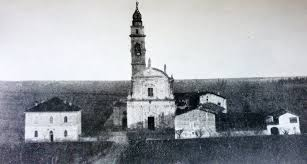
Controversa è l’etimologia del nome di Bottanuco. Benché sin dal suo apparire nei più antichi documenti abbia mantenuto una grafia pressoché invariata - il primo documento ufficiale, rinvenuto tra le membrane capitolari al fascicolo K.X, , risalente all’anno 980, riporta “loco Botenuco” - gli studiosi si dichiarano incerti se farlo risalire ad un nome etrusco “Bottanus” con suffisso in “ucus” (ritrovamenti in Brembate testimoniano i rapporti commerciali di queste terre con gli Etruschi), oppure riferirlo alla via milanese detta Via del Bottonuto e menzionata in documenti del 1132 come “pusterla de Butinugo” e “ad Botonutum”.
Nel 1136 è denominato Botanugo; compare altrove anche come Botenucho, ma già nello statuto cittadino del 1263 è Botanuco.
Da non trascurare, infine, è il fatto che fino alla fine degli anni ’50 del XX secolo, compariva nello stemma comunale una botte di vino a testimoniare che il lavoro agricolo forniva, oltre a biade, cereali e gelsi, anche abbondante vino prodotto dai vigneti coltivati sull’elevata sponda dell’Adda.
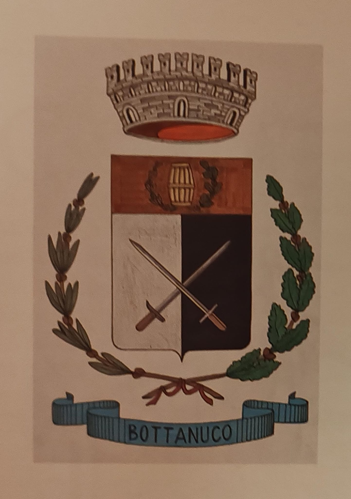
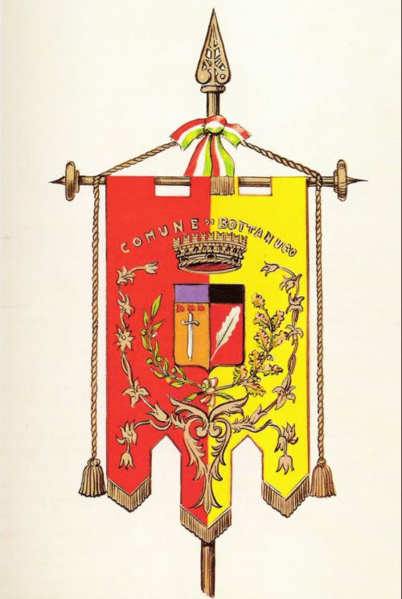
Ecco un riassunto chiaro e sintetico: Il Gruppo Alpini di Bottanuco nacque il 17 aprile 1933 grazie all’iniziativa di alcuni alpini veterani guidati dal primo capogruppo Luigi Roncalli. Dopo la pausa seguita alla Seconda Guerra Mondiale, il gruppo fu rifondato nel 1955 da Ignazio Verzeni, Umberto Gambirasio e Luigi Pagnoncelli, con l’intento di rafforzare lo spirito alpino e il legame tra generazioni. Nel tempo il gruppo ha affiancato alle attività associative un forte impegno per il territorio di Bottanuco, occupandosi della gestione del Parco Moretti e di interventi di manutenzione e recupero di aree e strutture di interesse comunitario. Anche in anni recenti il gruppo è rimasto attivo: nel 2023 contava circa dieci soci alpini e numerosi aggregati. Tra i momenti più significativi figura l’inaugurazione nel 1985 del Monumento all’alpino Bravi Antonio, nella frazione Cerro, a testimonianza del profondo legame con la memoria storica locale.
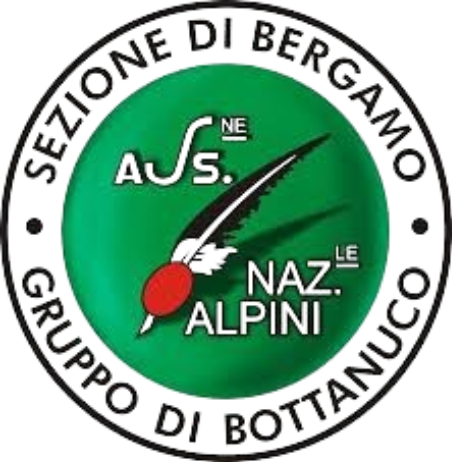
Tra le figure più oscure della criminologia italiana di fine Ottocento, spicca il nome di Vincenzo Verzeni, nato a Bottanuco nel 1849. Il suo caso, oltre a sconvolgere profondamente la comunità locale dell’epoca, divenne uno dei più studiati dagli esperti di medicina legale e psichiatria criminale del tempo. Verzeni è ricordato come uno dei primi serial killer documentati in Italia, e la brutalità dei suoi crimini colpì in modo così forte l’immaginario collettivo da farlo entrare nella letteratura specialistica come il “vampiro” o il “maniaco” di Bottanuco. Il suo caso attirò l’attenzione del criminologo Cesare Lombroso, che lo studiò come esempio emblematico di devianza patologica in un periodo in cui la psichiatria criminale era ancora agli inizi. Arrestato e ritenuto affetto da gravi disturbi mentali, Verzeni fu internato in un manicomio criminale, dove trascorse il resto della sua vita fino alla morte nel 1918, lasciando una delle pagine più cupe della storia di Bottanuco.
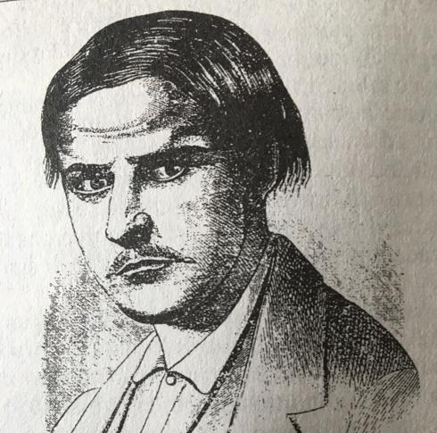
Giovanni Maria Finazzi (1802–1870) fu una figura di spicco della cultura lombarda dell’Ottocento. Nato a Bottanuco, dove trascorse infanzia e prima giovinezza, ricevette nel paese le basi della sua formazione religiosa e intellettuale, che segnarono la sua vocazione allo studio e all'insegnamento. Anche dopo aver intrapreso la carriera ecclesiastica e accademica, rimase legato alla sua comunità d’origine, che lo considerò sempre un punto di orgoglio locale. Sacerdote, docente e studioso, Finazzi è ricordato soprattutto per la sua opera maggiore, Il Codice diplomatico bergomense, fondamentale raccolta di documenti medievali ancora oggi utilizzata dagli storici. Come insegnante di retorica e filologia a Martinengo e poi nel seminario di Pavia, unì rigore scientifico e attenzione alla formazione morale degli studenti, lasciando un’impronta duratura nel mondo culturale lombardo. Per la qualità degli studi e l’impatto educativo, Finazzi resta una delle personalità più significative della sua epoca.
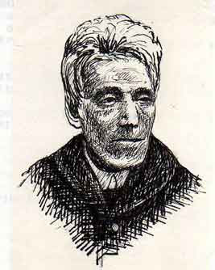
Bartolomeo Colleoni (1395–1475), celebre condottiero del Rinascimento e Capitano-Generale della Repubblica di Venezia, fu una figura decisiva nella storia militare e politica lombarda. Oltre al prestigio ottenuto sui campi di battaglia, costruì un vasto sistema di domini nella pianura bergamasca, grazie ai quali esercitò un forte controllo sul territorio. Bottanuco fece parte dei feudi concessi a Colleoni da Venezia come riconoscimento per i suoi servizi. Il paese rientrò così nell’amministrazione colleonesca, che influenzò la gestione delle terre, le rendite agricole e l’organizzazione locale. La presenza del condottiero lasciò tracce nella storia del luogo, inserendo Bottanuco nella rete dei centri strategici che sostenevano il potere e l’economia della famiglia Colleoni.
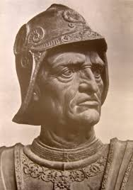
Alcune immagini provengono dal libro "La storia, i luoghi e la gente di Bottanuco"
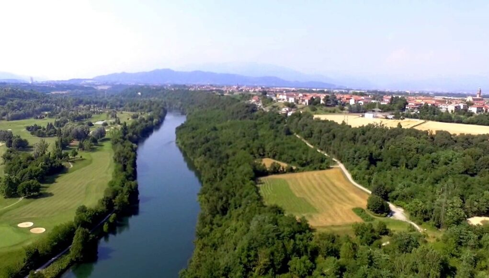
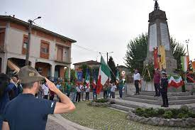

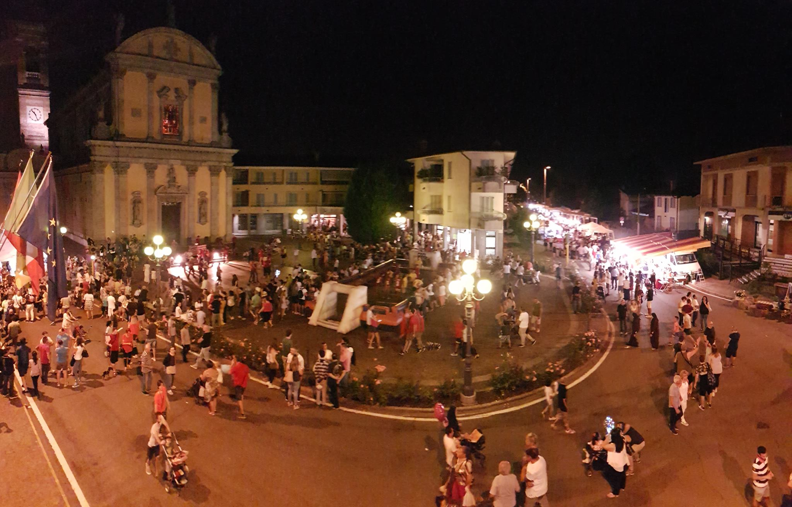
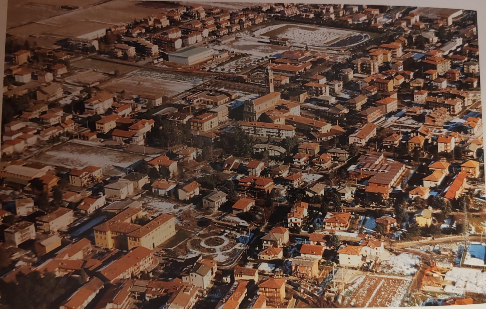
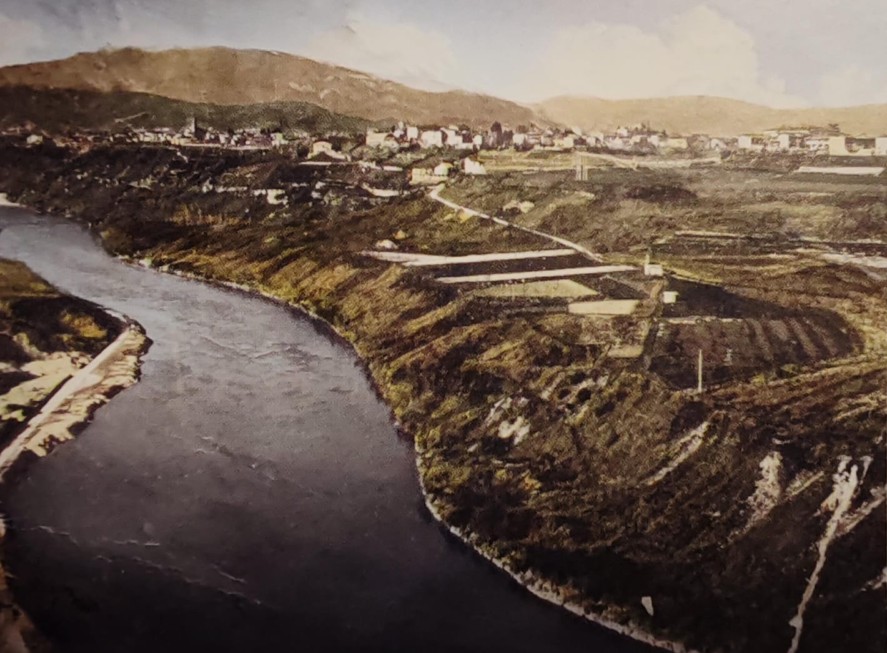
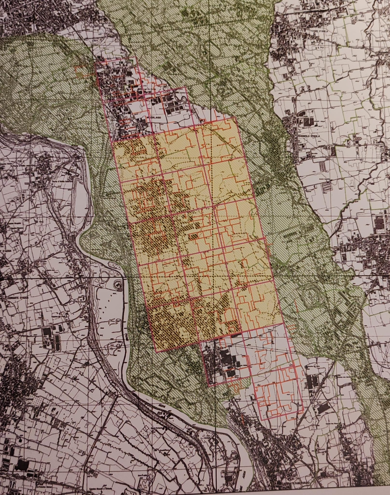
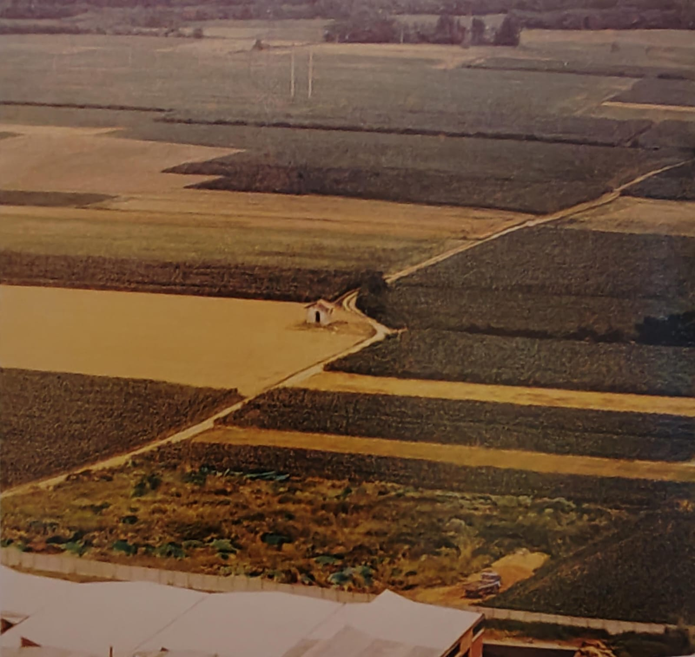
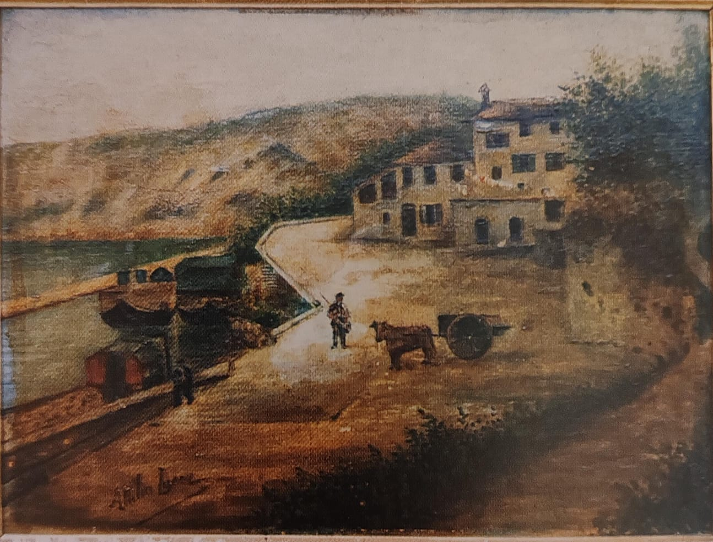